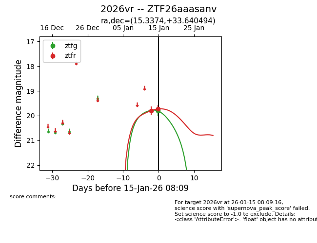
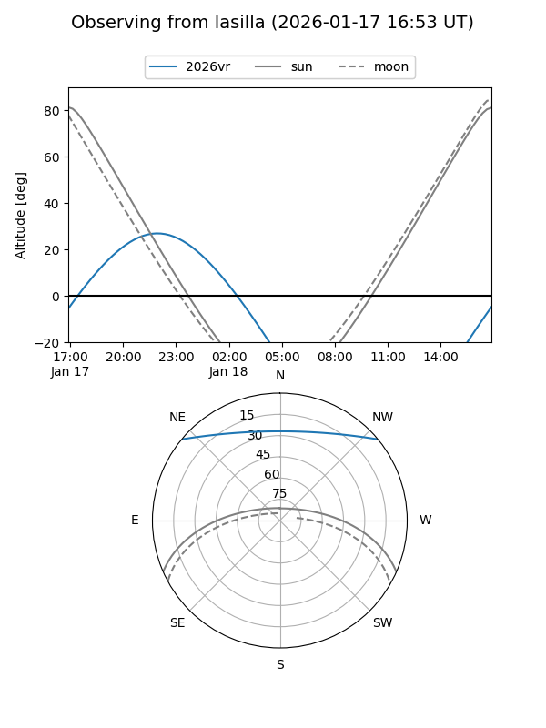
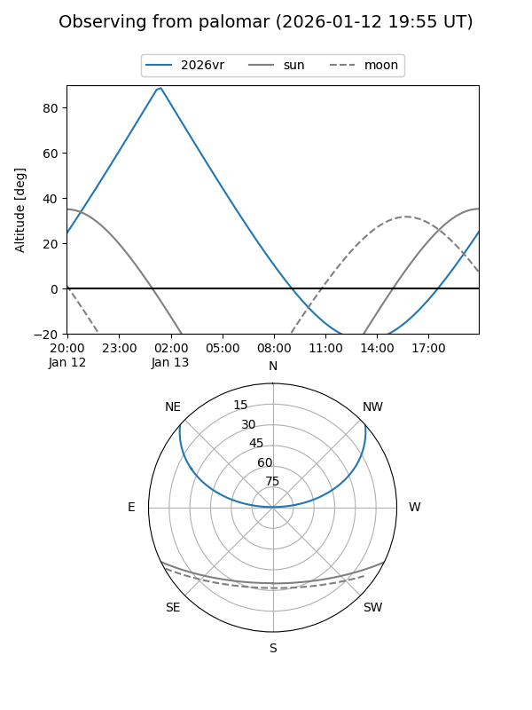

2026vr
Target 2026vr at 2026-01-15 08:10
Aliases and brokers:
FINK: link
Lasair: link
ALeRCE: link
TNS: link
YSE: link
alt names
ZTF26aaasanv (ztf,fink_ztf)
2026vr (tns,yse)
Coordinates:
equatorial (ra, dec) = 15.3374,+33.64049
equatorial (HMS+DMS) = 01:01:20.97,+33:38:25.78
galactic (l, b) = (125.2948,-29.18578)
Flags:
Photometry:
last ztfg=19.81, ztfr=19.73
1 ztfg, 2 ztfr detections
Lightcurve

Visibility


Additional plots